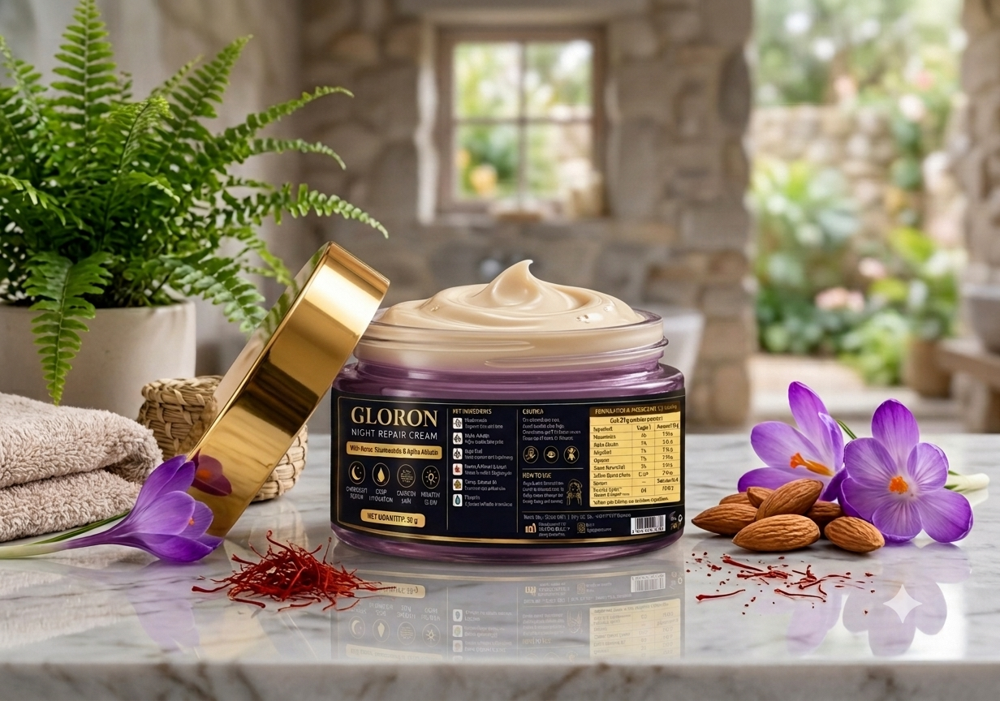
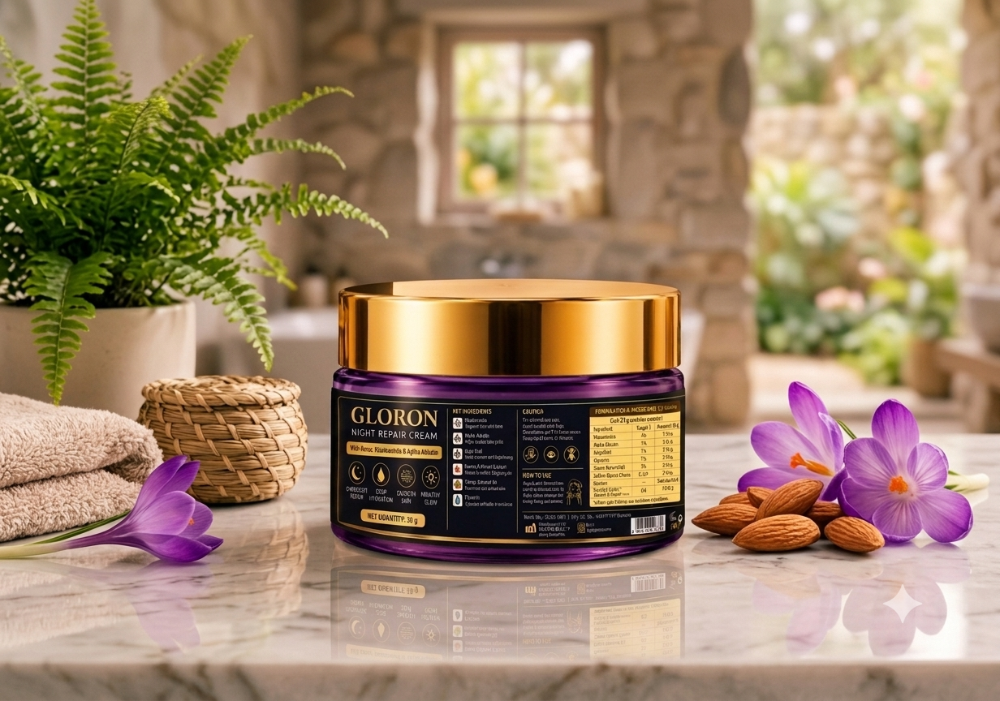
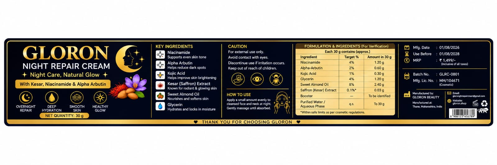
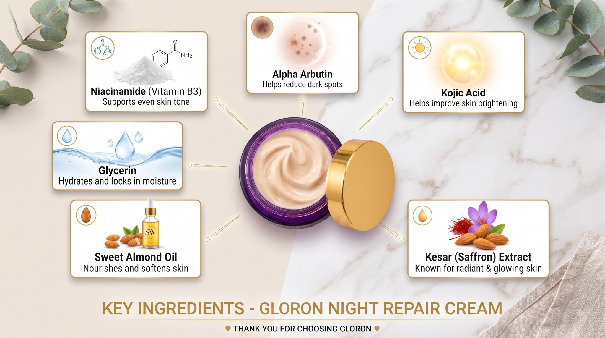

Supports an even-looking skin tone.
GLORON BEAUTY · NIGHT CAREWake Up to
Wake Up to
Naturally Radiant-Looking Skin
A luxurious nighttime skincare ritual with Niacinamide, Alpha-Arbutin, Kojic Acid, Saffron Extract, Glycerin and Sweet Almond Oil.
SHOP GLORON · ₹1,59930 gNet quantity
1–2 daysDispatch
3–7 daysDelivery
FREEPan-India shipping
Night care, natural glow.
GLORON Night Repair Cream is designed for a comfortable nighttime skincare routine, helping skin feel moisturized, nourished, soft and refreshed by morning.



NIGHT REPAIR CREAM · 30 G
GLORON Night Repair Cream
₹1,599
Rich yet comfortable nighttime care formulated for hydration, nourishment and a smoother, brighter-looking complexion.
- Niacinamide 4%
- Alpha-Arbutin 2%
- Kojic Acid 1%
- Glycerin 4%
- Sweet Almond Oil 8%
- Saffron Extract 0.1%
Thoughtful ingredients. Simple ritual.

Helps improve the appearance of dark spots.
Helps improve the appearance of skin brightness.
Helps hydrate and lock in moisture.
Nourishes and softens skin.
Used in the formula for a radiant-looking complexion.
Formulation note: The supplied label lists “Booster — To be identified” and purified water/aqueous phase q.s. We do not invent the booster identity.
Your five-step night routine.
PRODUCT DETAILS
Made for your nighttime routine.
Apply a small amount evenly to a cleansed face and neck at night. Gently massage until absorbed and leave on overnight.
Net quantity: 30 g
Website selling price: ₹1,599
Current payment: Prepaid only
Share your GLORON experience.
Questions, answered.
How do I use GLORON?
Cleanse your face at night, apply a small amount evenly to face and neck while avoiding the eye area, gently massage until absorbed, and leave on overnight. Cleanse in the morning.
How much product do I get?
Each jar contains 30 g. Duration depends on the amount used each night.
What are the key ingredients?
Niacinamide, Alpha-Arbutin, Kojic Acid, Glycerin, Sweet Almond Oil and Saffron (Kesar) Extract.
Is it suitable for all skin types?
GLORON is formulated for general skincare use. Patch test before first use, especially if you have sensitive skin.
How long does delivery take?
Orders are dispatched within 1–2 business days and typically delivered within 3–7 business days depending on location.
Do you offer COD?
Not currently. GLORON currently accepts prepaid orders only.
What payment methods are accepted?
UPI, credit/debit cards and net banking, subject to the payment methods enabled on the GLORON Razorpay account.
What if my order arrives damaged?
Contact GLORON within 48 hours with your order number and photos/video. Eligible damaged, leaking, wrong or missing items can be handled under the replacement policy.